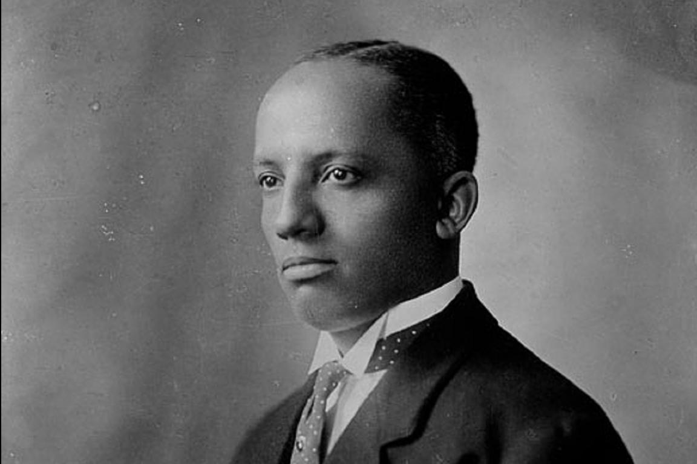
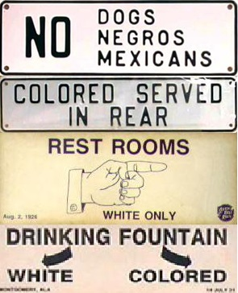
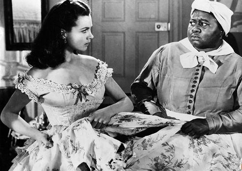

I am a black man in 1920
The Progressive Era is in full swing
Science is becoming critical to daily life
100 years later, many people would agree that conservatism has always been the true cause for racism throughout history
But I know the truth...
It's the progressive mindset that's giving rise to increasingly severe discrimination, segregation, and dehumanization on racial lines!
Jim Crow
The term "Jim Crow" predates the civil war
Jim Crow was a dimwitted black slave - a fictional character created by the actor Thomas Dartmouth Rice
The popularity of the original Jim Crow originally faded into the shadows...
...but the term "Jim Crow" regained popularity again in the Jim Crow laws
The laws themselves are crushing and oppressive to black people
A black person cannot not offer his hand to a white - it implies being socially equal
In creating this regulation, the government seeks to crush the self-image of black people.
Why push people down when you can make them push themselves?
A black person cannot touch a white woman - he will likely be accused of rape
White people have a sexual fear of people of color
They abate their fear by portraying all black men as uncultured rapists.
The US was founded upon the idea that the government existed to protect every last one of its subjects.
The government of Jim Crow not only fails to protect blacks like myself - it aids and abetts our vile mistreatment.
They justify this with the concept of separate but equal - claiming that even though we're segregated from whites, we're still equal under the government.
THEY LIE.
South Carolina spends 12 times as much on the education of white children than it does on the education of black children!
Throughout the South, we blacks are forbidden from entering movie theaters, hotels, and restaurants - we can't even get a drink at a nice water fountain!
This is all part of the government's masterplan...
...without education we can never move up the socioeconomic ladder...
...the government provides blacks with horrible facilities in comparison to whites...
...we can never achieve equality!
Eugenics
For the most part, Eugenics refers to the breeding of specific heritable characteristsics in order to improve future generations of humans.
Of course, black people are not classified as a heritable population.
White people have labeled us beasts!
A book by Charles Carroll named "The Negro a Beast" scientifically analyzes why the "Negro" is not equal to the white man on the biological level.
Carroll: "[the] relatively short, broad skull of the White, finds its strongest contrast in the long, narrow skull of the Negro. This length and narrowness of the Negro's skull is a character of the ape."
"The narrowness of the Negro's skull denotes his lack of energy, force, and executive ability. This is significant, when considered in connection with the design of God in creating man, and the great task to which he was assigned in the Creation."
Charles Carroll supported his scientific argument using religion. But by definition, aren't religion and science polar opposites?
Furthermore, religion is open to interpretation - Carroll created his own interpretation of Christianity, and used it to support his point.
Essentially, Carroll is using "Darwinian theory [as a] rational for using the power of government to weed out the undesirable and unfit." (Caden)
This "science" is not real science - it was just psuedoscience, but the white people don't care.
It legitimatizes their cruel oppression of blacks.
Eugenics